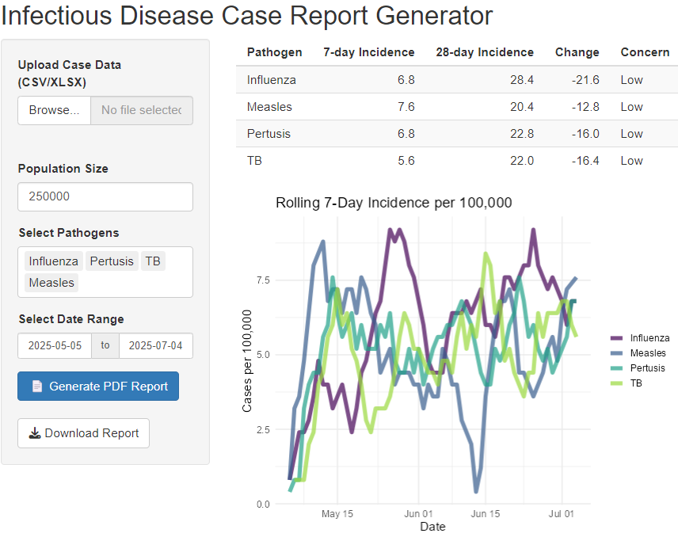
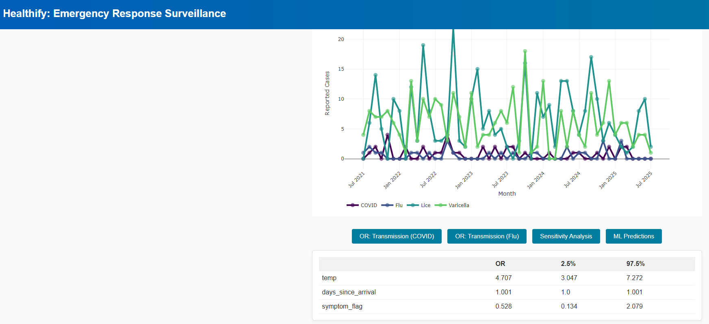
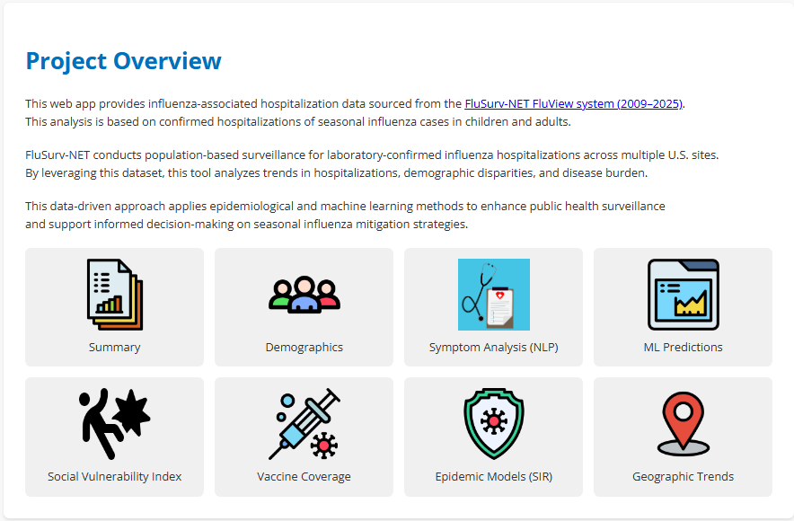
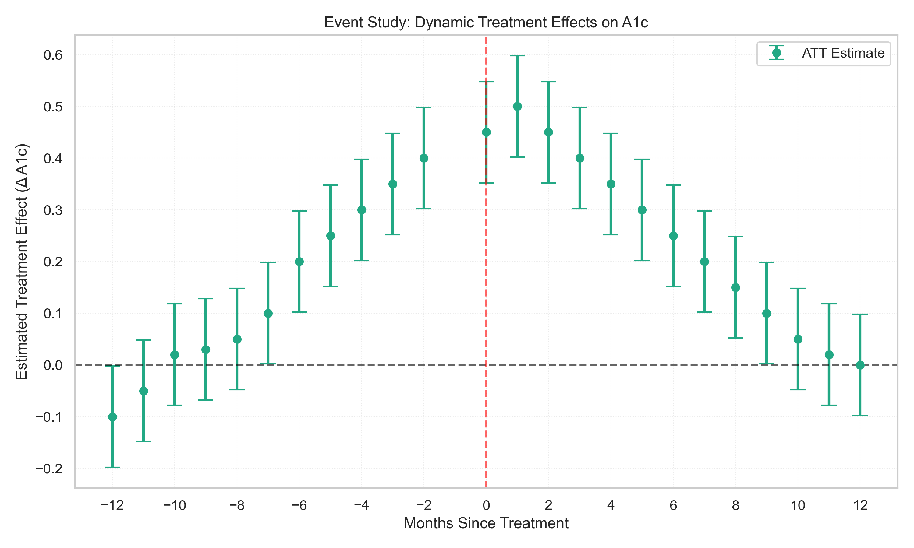
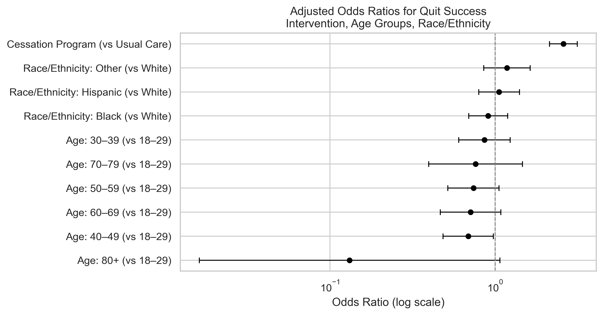

Healthcare Data Science Projects

Outbreak Monitor: CDC-Deployed Reporting Automation
Developed during an emergency response with the CDC, this system automated daily outbreak reporting across refugee camps.
It parsed clinical notes to identify infectious disease conditions and generated structured PDF reports, replacing a manual workflow
that previously took several hours. The system was later scaled for national use in low-connectivity environments.

Case Triage & Decision Support Engine
Developed during an emergency CDC deployment, this system automated the quarantine and isolation process for high-risk individuals using clinical symptoms, temperature, and lab data. Replaced manual triage with real-time, ML-assisted decisions to speed up interventions and ensure consistent public health protocol execution.

CDC Flu Surveillance & Modeling App
An interactive web application built with Python and R, featuring dynamic visualizations, predictive models, and forecasting tools
powered by CDC FluSurv-NET data. Combines machine learning and public health analytics to support real-time flu surveillance
and decision-making.

Causal Impact Modeling: Diabetes Intervention Simulation
Built a synthetic longitudinal dataset of 7,528 patients to evaluate the effects of a simulated diabetes intervention using fixed effects and staggered Difference-in-Differences. Applied event study methods to estimate dynamic treatment effects on A1c outcomes, producing clean, reproducible visualizations for policy and clinical applications.

Simulated Smoking Cessation Study
Built a synthetic cohort to explore quit success drivers among baseline smokers. Applied logistic regression to assess intervention effects, education,
income, and age-related disparities in cessation outcomes. Project highlights causal logic, simulation design, and real-world reporting.
Summit County Public Health – Analytics
Led applied analytics for a local public health authority, delivering geospatial, predictive, and decision-support analyses across multiple health outcomes.
Work focused on risk stratification, short-term forecasting, pipeline automation, and translating results into operational and policy decisions within a regulated environment.
Tribal Epidemiology & Leadership
Led statistical modeling and reporting initiatives with American Indian & Alaska Native collaborators. Delivered comparative‑effectiveness studies,
designed research frameworks, and provided methodological consulting across health and education domains.